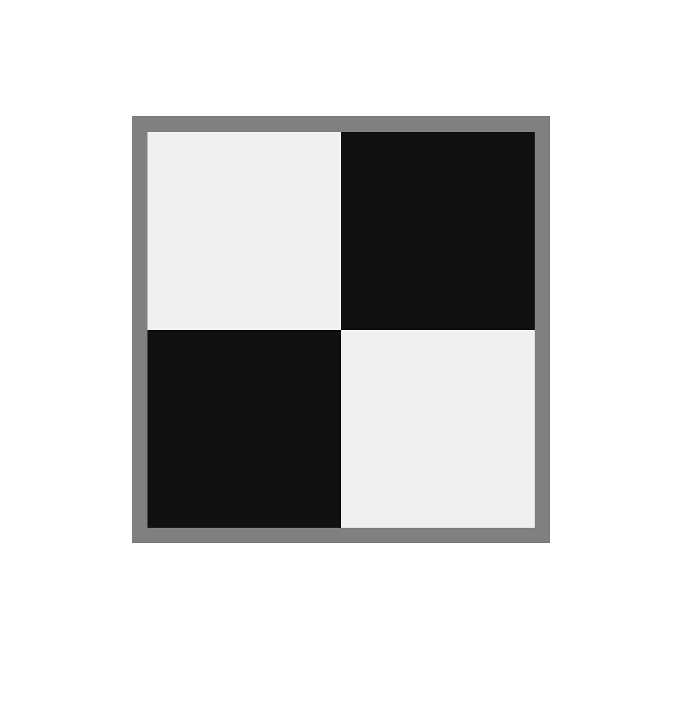
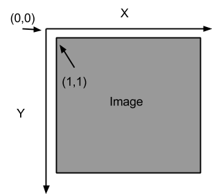
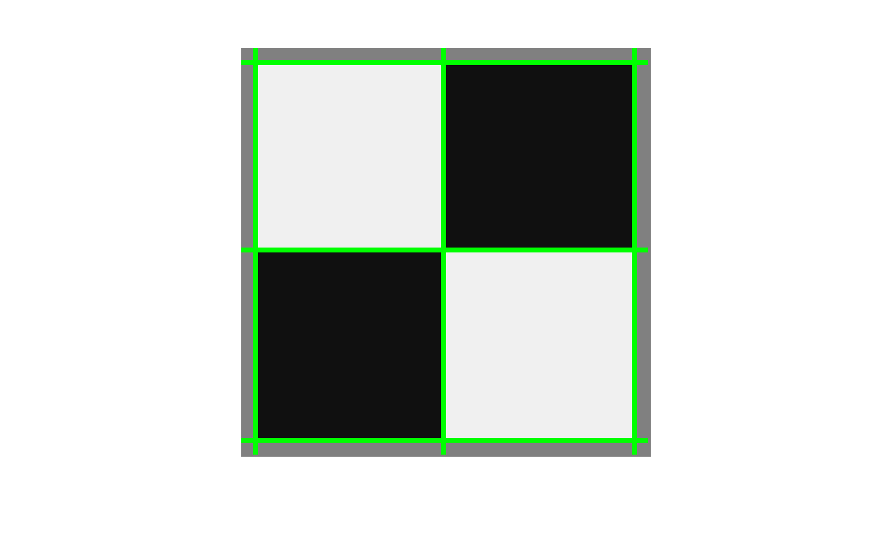

CS4495 - Spring 2015 - OMS Introduction to Computer Vision
Problem Set 1: Edges and Lines
Due Sunday, February 8th, 2015 at 11:55pm
Description
This problem set is your first “vision” project where you compute an “answer” – that is some structural or semantic description as to what is in an image. You’ll find edges and objects. And you’ll learn that some methods work well for carefully controlled situations and hardly at all when you relax those constraints.
RULES: You may use Matlab (or image processing functions on other platforms) to find edges, such as Canny or other operators. Don’t forget that those have a variety of parameters and you may need to experiment with them. BUT: YOU MAY NOT USE ANY HOUGH TOOLS. For example, you need to write your own accumulator array data structures and code for voting and peak finding.
What to submit
Download and unzip a template for your platform (also under: https://www.udacity.com/wiki/ud810):
Rename it to ps1_xxxx (i.e. ps1_matlab, ps1_octave, or ps1_python) and add in your solutions:
ps1_xxxx/
- input/ - input images, videos or other data supplied with the problem set
- ps1-input0.png
- ps1-input0-noise.png
- ps1-input1.png
- ps1-input2.png
- ps1-input3.png
- output/ - directory containing output images and other files your code generates
Note: Output images must be stored with following mandatory naming convention:
ps<problem set #>-<question #>-<part>-<counter>.png
Example: ps1-1-a-1.png (first output image for question 1-a)
- ps1.m or ps1.py - code for completing each part, esp. function calls; all functions themselves must be defined in individual function files with filename same as function name, as indicated
- *.m or *.py - Matlab/Octave function files (one function per file), Python modules, any utility code
- ps1_report.pdf - a PDF file that shows all your output for the problem set, including images labeled appropriately (by filename, e.g. ps1-1-a-1.png) so it is clear which section they are for and the small number of written responses necessary to answer some of the questions (as indicated).
Zip it as ps1_xxxx.zip, and submit on T-Square.
Questions
- For this question we will use input/ps1-input0.png:

This is a test image for which the answer should be clear, where the “object” boundaries are only lines.
- Load the input grayscale image (input/ps1-input0.png) as img and generate an edge image – which is a binary image with white pixels (1) on the edges and black pixels (0) elsewhere.
For reference, do “doc edge” in Matlab and read about edge operators. Use one operator of your choosing – for this image it probably won’t matter much. If your edge operator uses parameters (like ‘canny’) play with those until you get the edges you would expect to see.
Output: Store edge image (img_edges) as ps1-1-a-1.png
- Implement a Hough Transform method for finding lines. Note that the coordinate system used is as pictured below with the origin placed one pixel above and to the left of the upper-left pixel of the image and with the Y-axis pointing downwards.

Thus, the pixel at img(r,c) corresponds to the (x,y) coordinates (r,c), i.e. x=c and y=r. This pixel should vote for line parameters (ρ,θ) where: ρ = x⋅cos(θ) + y⋅sin(θ), and θ = atan2(y,x).
This has the effect of making the positive angular direction clockwise instead of counter-clockwise in the usual convention. Theta (θ) = zero still points in the direction of the positive X-axis.
- Write a function hough_lines_acc that computes the Hough Transform for lines and produces an accumulator array. Your code should conform to the specifications of the Matlab function hough: http://www.mathworks.com/help/images/ref/hough.html
Note that it has two optional parameters RhoResolution and Theta, and returns three values - the hough accumulator array H, theta (θ) values that correspond to columns of H and rho (ρ) values that correspond to rows of H.
Apply it to the edge image (img_edges) from question 1:
[H, theta, rho] = hough_lines_acc(img_edges);
Or, with one optional parameter specified (θ = integers -90 to 89, i.e. 180 values including 0):
[H, theta, rho] = hough_lines_acc(img_edges, 'Theta', -90:89);
Function file: hough_lines_acc.m containing function hough_lines_acc (identical name)
Output: Store the hough accumulator array (H) as ps1-2-a-1.png (note: write a normalized uint8 version of the array so that the minimum value is mapped to 0 and maximum to 255).
- Write a function hough_peaks that finds indices of the accumulator array (here line parameters) that correspond to local maxima. Your code should conform to the specifications of the Matlab function houghpeaks:
http://www.mathworks.com/help/images/ref/houghpeaks.html
Note that you need to return a Qx2 matrix with row indices (here rho) in column 1, and column indices (here theta) in column 2. (This could be used for other peak finding purposes as well.)
Call your function with the accumulator from the step above to find up to 10 strongest lines:
peaks = hough_peaks(H, 10);
Function file: hough_peaks.m
Output: ps1-2-b-1.png - like above, with peaks highlighted (you can use drawing functions).
- Write a function hough_lines_draw to draw color lines that correspond to peaks found in the accumulator array. This means you need to look up rho, theta values using the peak indices, and then convert them (back) to line parameters in cartesian coordinates (you can then use regular line-drawing functions).
Use this to draw lines on the original grayscale (not edge) image. The lines should extend to the edges of the image (aka infinite lines):
hough_lines_draw(img, 'ps1-2-c-1.png', peaks, rho, theta);
Function file: hough_lines_draw.m
Output: ps1-2-c-1.png - can be saved as a plot directly from hough_lines_draw().
It should look something like this:

You might get lines at the boundary of the image too depending upon the edge operator you selected (but those really shouldn’t be there).
- What parameters did you use for finding lines in this image?
Output: Text response describing your accumulator bin sizes, threshold and neighborhood size parameters for finding peaks, and why/how you picked those.
- Now we’re going to add some noise.
- Use ps1-input0-noise.png - same image as before, but with noise. Compute a modestly smoothed version of this image by using a Gaussian filter. Make σ at least a few pixels big.
Output: Smoothed image: ps1-3-a-1.png
- Using an edge operator of your choosing, create a binary edge image for both the original image (ps1-input0-noise.png) and the smoothed version above.
Output: Two edge images: ps1-3-b-1.png (from original), ps1-3-b-2.png (from smoothed)
- Now apply your Hough method to the smoothed version of the edge image. Your goal is to adjust the filtering, edge finding, and Hough algorithms to find the lines as best you can in this test case.
Output:
- Hough accumulator array image with peaks highlighted: ps1-3-c-1.png
- Intensity image (original one with the noise) with lines drawn on them: ps1-3-c-2.png
- Text response: Describe what you had to do to get the best result you could.
- For this question use: ps1-input1.png
- This image has objects in it whose boundaries are circles (coins) or lines (pens). For this question you’re still finding lines. Load/create a monochrome version of the image (you can pick a single color channel or use a built-in color to grayscale conversion function), and compute a modestly smoothed version of this image by using a Gaussian filter. Make σ at least a few pixels big.
Output: Smoothed monochrome image: ps1-4-a-1.png
- Create an edge image for the smoothed version above.
Output: Edge image: ps1-4-b-1.png
- Apply your Hough algorithm to the edge image to find lines along the pens. Draw the lines in color on the original monochrome (not edge) image. The lines can extend to the edges of the image.
Output:
- Hough accumulator array image with peaks highlighted: ps1-4-c-1.png
- Original monochrome image with lines drawn on it: ps1-4-c-2.png
- Text response: Describe what you had to do to get the best result you could.
- Now write a circle finding version of the Hough transform. You can implement either the single point method or the point plus gradient method. WARNING: This part may be hard!!! Leave extra time!
If you find your arrays getting too big (hint, hint) you might try make the range of radii very small to start with and see if you can find one size circle. Then maybe try the different sizes.
- Implement hough_circles_acc to compute the accumulator array for a given radius.
Using the same original image (monochrome) as above (ps1-input1.png), smooth it, find the edges (or directly use edge image from 4-b above), and try calling your function with radius = 20:
H = hough_circles_acc(img_edges, 20);
This should return an accumulator H of the same size as the supplied image. Each pixel value of the accumulator array should be proportional to the likelihood of a circle of the given radius being present (centered) at that location. Find circle centers by using the same peak finding function:
centers = hough_peaks(H, 10);
Function file: hough_circles_acc.m (hough_peaks.m should already be there)
Output:
- Smoothed image: ps1-5-a-1.png (this may be identical to ps1-4-a-1.png)
- Edge image: ps1-5-a-2.png (this may be identical to ps1-4-b-1.png)
- Original monochrome image with the circles drawn in color: ps1-5-a-3.png
- Implement a function find_circles that combines the above two steps, searching for circles within a given radius range, and returns circle centers along with their radii:
[centers, radii] = find_circles(img_edges, [20 50]);
Function file: find_circles.m
Output:
- Original monochrome image with the circles drawn in color: ps1-5-b-1.png
- Text response: Describe what you had to do to find circles.
- More realistic images. Now that you have Hough methods working, we’re going to try them on images that have clutter in them - visual elements that are not part of the objects to be detected. The image to use is ps1-input2.png.
- Apply your line finder. Use a smoothing filter and edge detector that seems to work best in terms of finding all the pen edges. Don’t worry (until b) about whether you are finding other lines.
Output: Smoothed image you used with the Hough lines drawn on them: ps1-6-a-1.png
- Likely the last step found lines that are not the boundaries of the pens. What are the problems present?
Output: Text response
- Attempt to find only the lines that are the *boundaries* of the pen. Three operations you need to try are better thresholding in finding the lines (look for stronger edges), checking the minimum length of the line, looking for nearby parallel lines.
Output: Smoothed image with new Hough lines drawn: ps1-6-c-1.png
- Finding circles on the same clutter image (ps1-input2.png).
- Apply your circle finder. Use a smoothing filter that seems to work best in terms of finding all the coins.
Output: the smoothed image you used with the circles drawn on them: ps1-7-a-1.png
- Are there any false alarms? How would/did you get rid of them?
Output: Text response (if you did these steps, mention where they are in the code by file, line no. and also include brief snippets)
- Sensitivity to distortion. There is a distorted version of the scene at ps1-input3.png.
- Apply the line and circle finders to the distorted image. Can you find lines? Circles?
Output: Monochrome image with lines and circles (if any) found: ps1-8-a-1.png
- What might you do to fix the circle problem?
Output: Text response describing what you might try
- EXTRA CREDIT: Try to fix the circle problem (THIS IS HARD).
Output:
- Image that is the best shot at fixing the circle problem, with circles found: ps1-8-c-1.png
- Text response describing what tried and what worked best (with snippets).